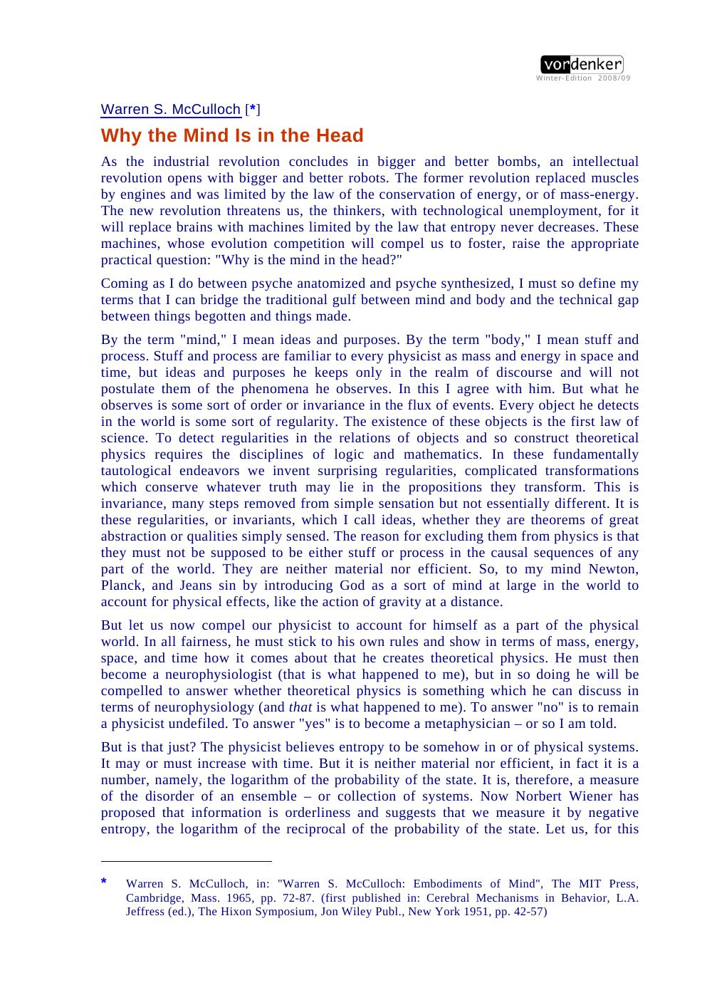
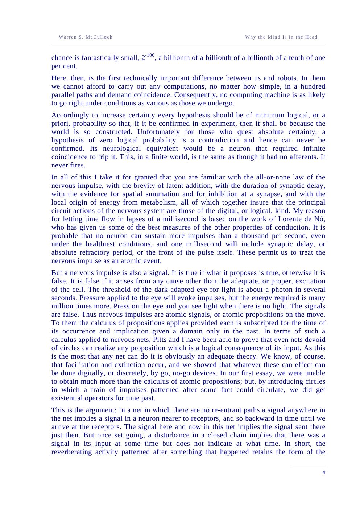
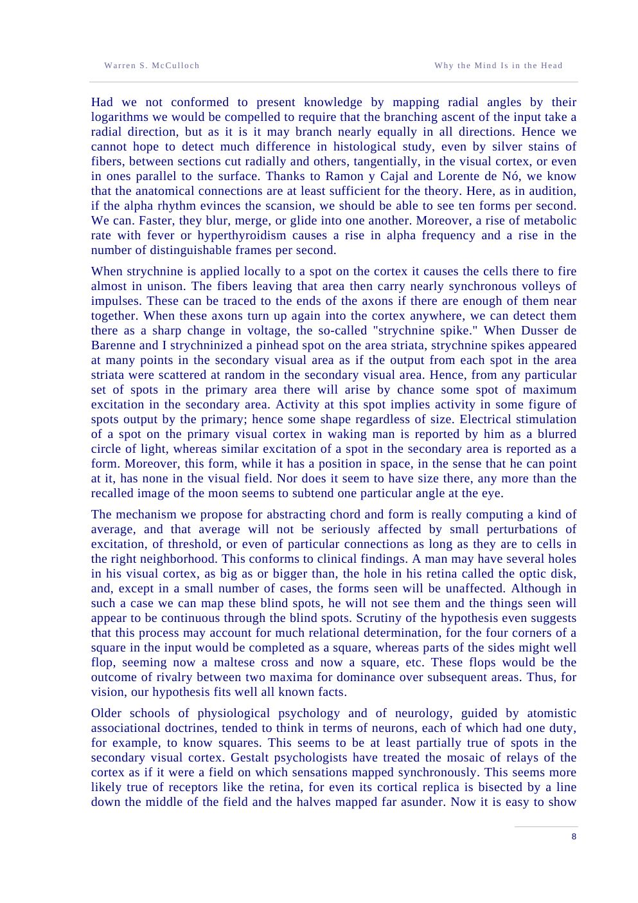
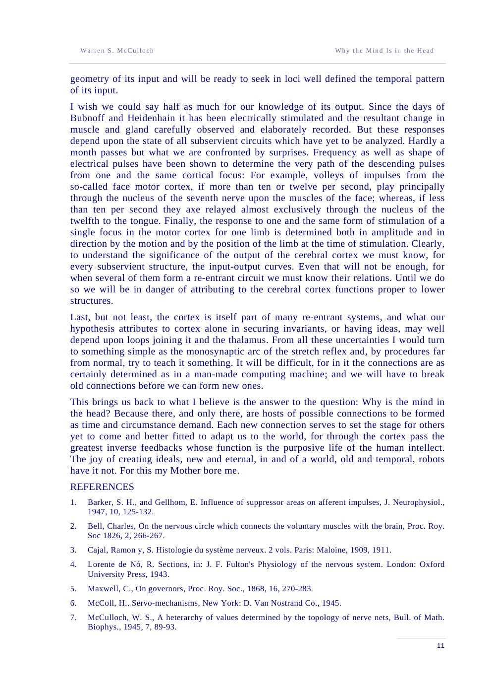

Form without time
A pattern that reverberates around a closed path retains the form of what happened but not when. It asserts: there was some time at which such-and-such occurred.
The Hixon Symposium · 1951
A hundred million photoreceptors in each eye. Three bits per millisecond out of the hand. The brain is a device that can only corrupt revelation — and yet it knows the world, because it throws away everything that fails to agree with everything else.
Read the plateThe thesis
The lecture begins with a revolution: machines will replace brains, and unlike engines they are limited by entropy, not energy. To say what such a machine can know, McCulloch quantifies information. A bivalent neuron has two states; of them have . One bit fixes one binary decision. Information is negative entropy: the logarithm of the reciprocal of the probability of the state.
Then the brutal arithmetic. The eye has about receptors; the optic nerve about channels; the whole motor output is a few bits per millisecond. The brain discards almost everything. What it keeps is what coincides — and coincidence is improbable, so what survives is likely to be real.
Laboratory · the information funnel
Particles stream from the receptor field through the coincidence gate. Raise and fewer pass: the output becomes rarer, more certain, and poorer in information. This is the whole economy of the nervous system in one picture.
Each passing particle is a coincidence that survived the gate. The chance of a chance coincidence is ; the certainty that a survivor is due to the world is .
The arithmetic
A neuron either fires or does not; the eye and ear report a continuous intensity by discrete impulses whose frequency approximates the logarithm of intensity. The nervous system is a digital device built out of analogical sensors. Information is the logarithm of the reciprocal of the probability of the state — negative entropy.
The lecture then turns to memory and purpose. A reverberating circuit preserves the form of an event but loses its time: an existential quantifier over the past. A negative-feedback loop preserves a value against perturbation: a purpose. A group average preserves a universal against transformation: an idea.
Information. For independent bivalent neurons, bits; fixing one neuron subtracts one from the exponent of the number of possible states.
The corruption ratio. The eye alone throws away roughly a hundred million to one (the displayed ratio uses 3 bits/ms out; the paper rounds to ). The brain is not a source of information; it is a sink — and a filter.
The wager. Demand more coincidence and you buy certainty with information. Demand zero logical probability and you get a contradiction that can never be confirmed.
Three kinds of invariance
A pattern that reverberates around a closed path retains the form of what happened but not when. It asserts: there was some time at which such-and-such occurred.
A negative feedback returns the system toward a state by an amount proportional to its deviation. The state it seeks is the goal, aim, or end of the operation.
An output invariant under every transform of a figure is the same for all its exemplars. That is what it means for a net to have a universal.
“But a nervous impulse is also a signal. … Thus nervous impulses are atomic signals, or atomic propositions on the move.”
“Reverberating activity patterned after something that happened retains the form of the happening but loses track of when it happened. … The ‘such and such’ is the idea wrenched out of time.”
“We pay for certainty with information.”
“Why is the mind in the head? Because there, and only there, are hosts of possible connections to be formed as time and circumstance demand.”
“The joy of creating ideals, new and eternal, in and of a world, old and temporal, robots have it not. For this my Mother bore me.”
The paper itself
click to enlarge




Why it matters
This is one of the clearest statements of a principle that modern machine learning rediscovered under other names: a useful representation is a lossy one. Compression is not a failure of knowledge; it is the condition of it. Coincidence detection is an early, biologically grounded form of the same idea.
And the final answer to the title is not a location but a capacity: the mind is in the head because the head is the place with the most possible connections, the most room for learning to alter the machine. That is McCulloch's answer to Descartes, and it is still a good one.